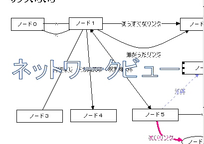

ノードは、iEditで編集対象となる基本要素です。
文書のアウトラインを考える場合は、ノードは文書の章や節に相当するものになります。プログラムのフローにおいては、ノードは処理の単位であり、状態遷移図では１つの状態を表します。アイデアプロセッサーとして使用するときは、ノードはアイデアを構成する１つの小片ということになります。
ノードは、「ラベル」、「テキスト」、「図形」という３つの属性を持っています。
ノードのラベルはツリービューとネットワークビューに表示されます。
ノードの図形属性は、ネットワークビューに表示されます。
|
 |
| アウトラインビューでのノード表示 | ネットワークビューでのノードの表示 |
ノードのテキストはテキストビューに表示されます。
iEditでは、ノードの階層的な関係をアウトラインビューで表示し、ノードのつながりをリンクと共にネットワークビューに表示します。ノードの内容をテキストビューに表示するというわけです。